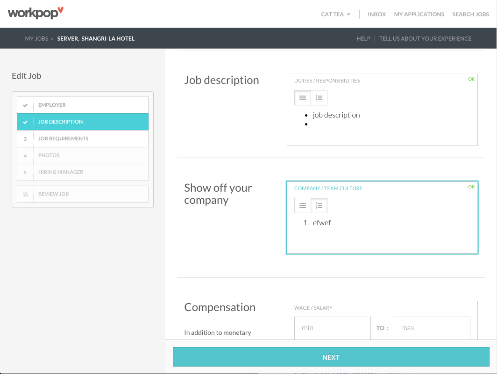
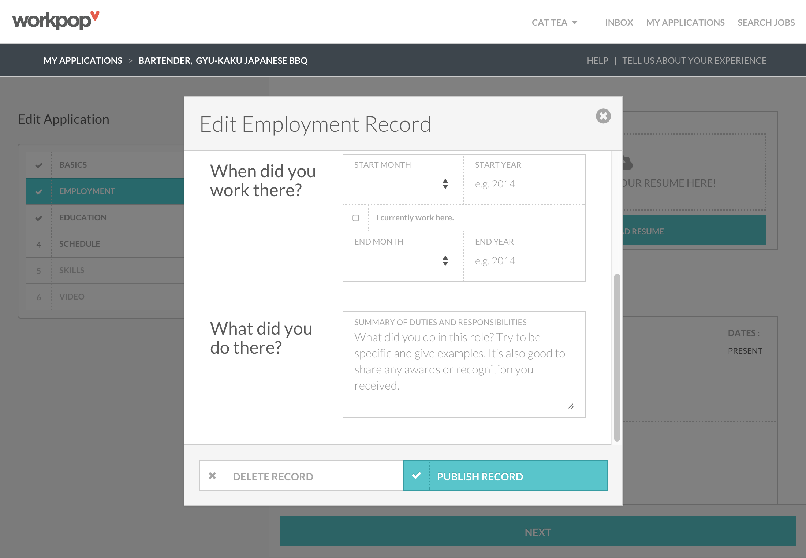
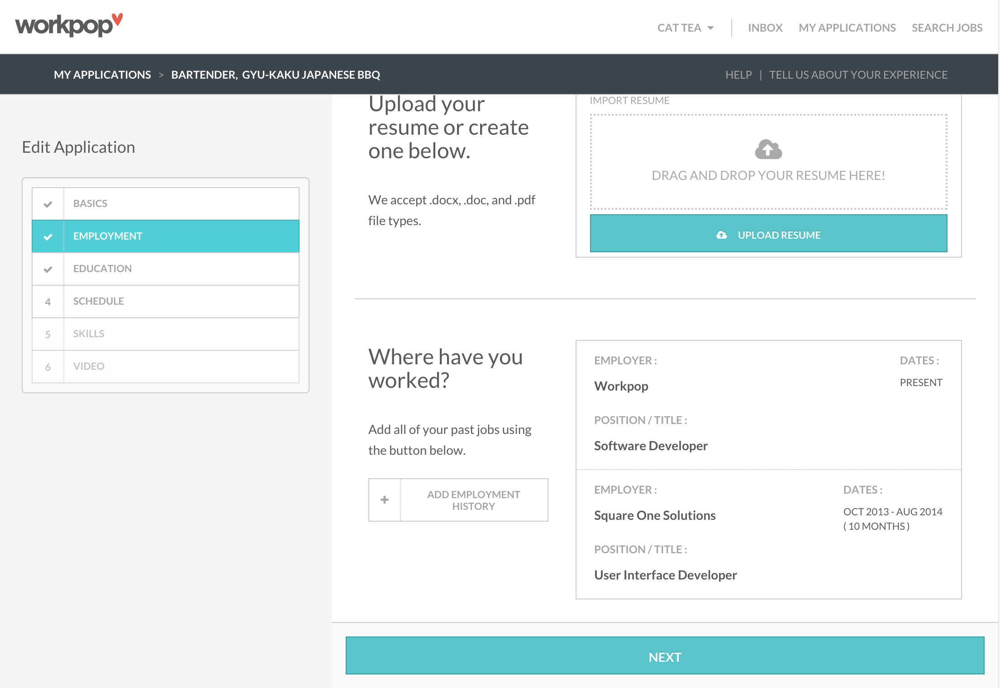

Palat
MeteorJS - Personal project
Palat
Product: my vision of a solution to the problems I experience when using yelp. A food review app utilizes positive reinforcement from users and constructive feedback and in turn, fosters a more positive business relationship with restaurants.
There are 2 problems I perceive with Yelp's user experience, splitting user groups by restaurant goers (consumers) and restaurant owners. Personally, as a consumer, when I look at a restaurant's Yelp page, I'm trying to determine what to order and what other people usually order at this restaurant. This information isn't easily visible because of the way Yelp structures its rating/review system. A restaurant's ratings and public perception could be potentially skewed by negative reviews that usually have more to do with the service the reviewer recieved than the food itself. My solution is an app where dishes are ranked within a restaurant by a 'like' system, allowing the most popular dishes to float to the top of the page. The restaurant itself can be rated on points such as service, quality, price, etc., but these ratings would be separated from the dishes they offer.
On the other hand, many small businesses have negative relationships with Yelp due to Yelp's business model. Yelp uses its ranking system as a way to collect revenue from businesses, and some businesses refuse to pay to filter negative reviews or their search ranking and consequently see their profile negatively affected. Chefs especially perceive Yelp to be a one way relationship, where users passive aggressively vent out negative feedback. Businesses are not given the opportunity to respond to reviewers unless they purchase an additional features from Yelp. A compilation of complaints from the FTC revealed that 'the most common complaints claim that Yelp filters out positive reviews and allows negative reviews through, especially in cases where the vendor in question did not purchase advertising.' If that's not a flawed business model, I don't know what is. I'd like to see a system in which reviews of a restaurant's food are truly reflective of what they offer, and a more transparent business model that doesn't rely on fraudulent reviews.
There are 2 problems I perceive with Yelp's user experience, splitting user groups by restaurant goers (consumers) and restaurant owners. Personally, as a consumer, when I look at a restaurant's Yelp page, I'm trying to determine what to order and what other people usually order at this restaurant. This information isn't easily visible because of the way Yelp structures its rating/review system. A restaurant's ratings and public perception could be potentially skewed by negative reviews that usually have more to do with the service the reviewer recieved than the food itself. My solution is an app where dishes are ranked within a restaurant by a 'like' system, allowing the most popular dishes to float to the top of the page. The restaurant itself can be rated on points such as service, quality, price, etc., but these ratings would be separated from the dishes they offer.
On the other hand, many small businesses have negative relationships with Yelp due to Yelp's business model. Yelp uses its ranking system as a way to collect revenue from businesses, and some businesses refuse to pay to filter negative reviews or their search ranking and consequently see their profile negatively affected. Chefs especially perceive Yelp to be a one way relationship, where users passive aggressively vent out negative feedback. Businesses are not given the opportunity to respond to reviewers unless they purchase an additional features from Yelp. A compilation of complaints from the FTC revealed that 'the most common complaints claim that Yelp filters out positive reviews and allows negative reviews through, especially in cases where the vendor in question did not purchase advertising.' If that's not a flawed business model, I don't know what is. I'd like to see a system in which reviews of a restaurant's food are truly reflective of what they offer, and a more transparent business model that doesn't rely on fraudulent reviews.
-

-

- 
- 
- 
Workpop
MeteorJS
Workpop
Product: a jobs platform for employees and employers in the hourly space.
I worked on key features in MeteorJS that included a widget where employers can review and sort applicants for their job, a rich text editor to allow copy/pasting with bullet points and styled formatting, validation for candidate and employer forms, applicant filtering, and resume parsing.
I took on responsibilities beyond that of a developer, acting as product owner/developer when told to implement a feature without much direction. I found product ownership enjoyable and rewarding, to be given the freedom to determine and iterate through exactly how a feature should behave when given a general idea of what the founders wanted to see. One particular feature I oversaw was resume parsing, in which a user uploads their resume as the first step of their application. Using a 3rd party resume parsing service (Sovreign), we attempt to fill out as much of their application as we can. I was involved in every step of this process, from designing and improving the user interface, to flowcharting the user experience, to fully implementing the feature. The screenshots shown are the first few steps of each user flow - for employers, filling out a job posting and for candidates, filling out an application.
I worked on key features in MeteorJS that included a widget where employers can review and sort applicants for their job, a rich text editor to allow copy/pasting with bullet points and styled formatting, validation for candidate and employer forms, applicant filtering, and resume parsing.
I took on responsibilities beyond that of a developer, acting as product owner/developer when told to implement a feature without much direction. I found product ownership enjoyable and rewarding, to be given the freedom to determine and iterate through exactly how a feature should behave when given a general idea of what the founders wanted to see. One particular feature I oversaw was resume parsing, in which a user uploads their resume as the first step of their application. Using a 3rd party resume parsing service (Sovreign), we attempt to fill out as much of their application as we can. I was involved in every step of this process, from designing and improving the user interface, to flowcharting the user experience, to fully implementing the feature. The screenshots shown are the first few steps of each user flow - for employers, filling out a job posting and for candidates, filling out an application.

Monterey Bay Aquarium
AngularJS - Square One Solutions
Monterey Bay Aquarium
Product: a portal to be used internally by scientists at Monterey Bay Aquarium, translating the functionality which they used to calculate scores with in Excel into a web application.
This was a project for which I was solely responsible for the front-end, where scientists would enter various types of data regarding different species of fish across 10 criteria, with each criteria page producing a score for that category, and using those 10 scores to produce a final score. The front-end is all Angular with the calculations and scoring updating in real time. This was also my first application built in Angular.
The screenshots shown are steps of the most intricate criteria page, in which there are 5 subscores used to calculate a final score. Additionally, on each criteria page, a single report can have multiple species on it. Each species is represented by its own button at the top of the report (not pictured). For those reports with multiple species, if a user clicks one of those buttons, the form data will also update to reflect data pertaining to that species.
This was a project for which I was solely responsible for the front-end, where scientists would enter various types of data regarding different species of fish across 10 criteria, with each criteria page producing a score for that category, and using those 10 scores to produce a final score. The front-end is all Angular with the calculations and scoring updating in real time. This was also my first application built in Angular.
The screenshots shown are steps of the most intricate criteria page, in which there are 5 subscores used to calculate a final score. Additionally, on each criteria page, a single report can have multiple species on it. Each species is represented by its own button at the top of the report (not pictured). For those reports with multiple species, if a user clicks one of those buttons, the form data will also update to reflect data pertaining to that species.

NBC Universal
BackboneJS - Square One Solutions
NBC Universal
Product: a web app to be used internally by NBC Universal employees, where they can keep track of their invoices and purchase orders.
This was done in BackboneJS, and a user would be able to go through all stages of creating an invoice, to saving and editing, and as well as viewing and approving. I was the front-end lead for this new phase of an existing project with clean and robust code, while also maintaining compability with legacy code. I had to interpret various business rules for purchase orders and their activity, as well as develop components to facilitate the processing of large amounts of data regarding those purchase orders. The screenshots shown are steps of the various stages a purchase order would go through, from its draft to submission to approval.
This was done in BackboneJS, and a user would be able to go through all stages of creating an invoice, to saving and editing, and as well as viewing and approving. I was the front-end lead for this new phase of an existing project with clean and robust code, while also maintaining compability with legacy code. I had to interpret various business rules for purchase orders and their activity, as well as develop components to facilitate the processing of large amounts of data regarding those purchase orders. The screenshots shown are steps of the various stages a purchase order would go through, from its draft to submission to approval.